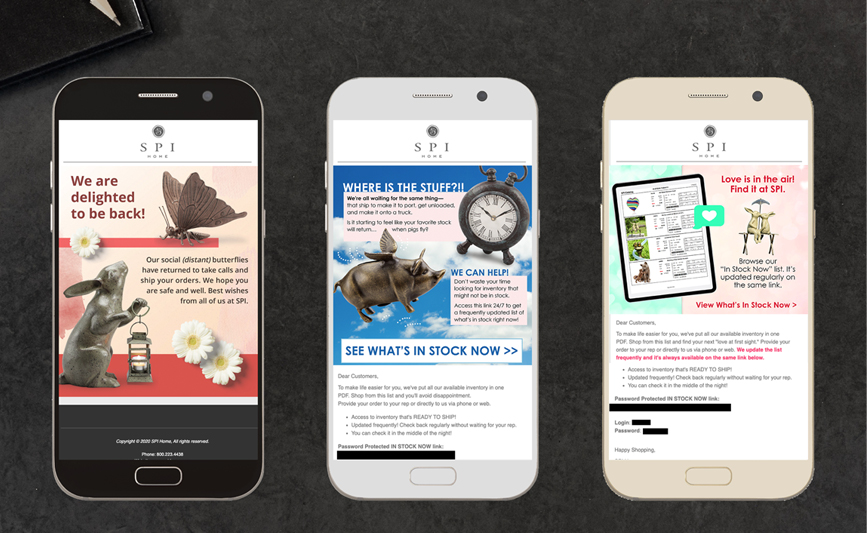
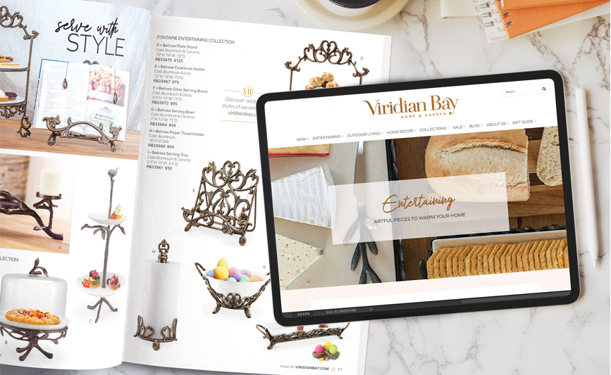
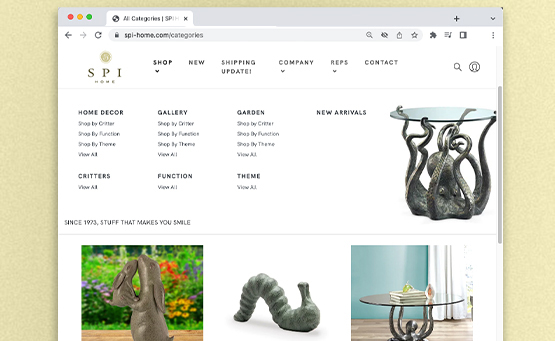

As product collections evolve, my team updates the Viridian Bay website to promote new style guides and seasonal themes. The ongoing process entails creating new hero images to reflect the most recent catalog products. Our team directs remote photographers to style new products for use in email campaigns and on product webpages.
I am a key member of a design team that switched SPI Home to a new CMS platform in 2020, which required new organization of product categories.
Website mainenance includes prepping product images to the correct size, in addition to color correcting and creating life settings for products that have insufficient photography. Coordinating email blasts to SMS and catalog advertising is a large role in our team's online presence.